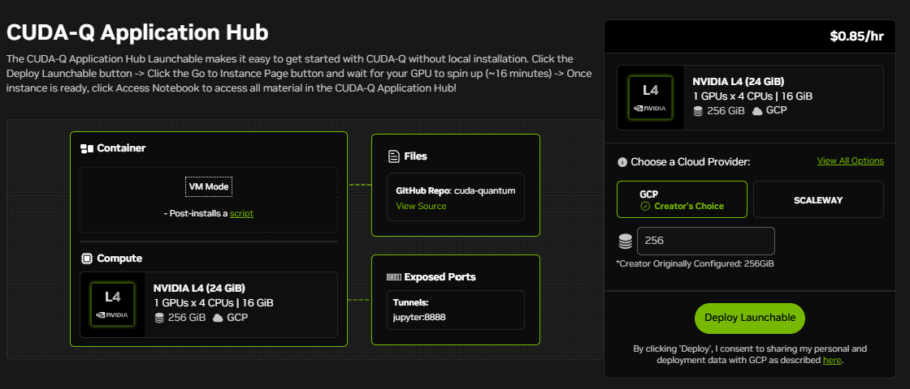

CUDA-Q 0.14 Simplifies Application Development and Brings macOS Support
GTC26 sees the release of CUDA-Q 0.14 - delivering several important advancements for developers and researchers. Notably, it introduces the CUDA-Q Application Hub as a Brev Launchable, providing easy access and streamlined experimentation with sample applications across domains like quantum chemistry, AI, and optimization.
In addition, this release adds long-awaited macOS support, enabling efficient local development and prototyping through Python using a local CPU. Furthermore, CUDA-Q provides options to scale experiments by connecting to more supported quantum processing units (QPUs) and cloud simulators, allowing users to seamlessly transition from local testing to more advanced deployments.

Fig 1: CUDA-Q Application Hub Launchable
We also introduce a new library, cudaq-realtime, that builds on NVQLink by giving developers a runtime API for microsecond-latency callbacks between GPUs and quantum controllers. See more details in this blog.
Let's review what's new in the 0.14 release. For more details, check out the release notes.
Application Hub Launchable
CUDA-Q's Application Hub serves as a research-focused platform, offering users easy access to a collection of CUDA-Q applications grounded in real-world projects and scientific papers. This curated set enables rapid exploration and testing of advanced features, allowing users to study various sample projects in domains such as chemistry, AI for quantum, optimization and more.
The application hub is now available as a Brev Launchable, which makes it significantly easier to use. Users can access and run applications directly in the cloud without the need for any installation or complex setup.
This streamlined approach enables researchers and developers to concentrate on experimentation, while also providing flexibility to choose their preferred GPU or CPU and configure their environment. The platform remains affordable and retains key benefits of Brev launchables, including easy setup and workflow adaptability.
The Application Hub launchable can be found here.
macOS Installation
CUDA-Q now offers macOS support, addressing a frequent developer request. The Python installation allows for efficient development and testing on a local CPU, making it ideal for prototyping. Additionally, developers can leverage supported QPUs and cloud simulators to scale their applications and experiments.
To install CUDA-Q on macOS, follow the instructions on PyPI or the quick start.
Pre-Trajectory Sampling with Batch Execution
Pre-Trajectory Sampling with Batch Execution (PTSBE) is an efficient method for sampling from noisy quantum circuits. Rather than simulating the full density matrix, PTSBE pre-samples unique noise trajectories and batches many shots across them, yielding orders-of-magnitude speedups for large shot counts.
PTSBE can be used to capture millions of times more noisy shot data, which can then be used as training data in ML tasks such as AI decoders, or it can be deployed proportionally, capturing the exact statistics of the problem while still offering a considerable speedup. In particular, PTSBE achieves traditional trajectory simulation accuracy at a fraction of the computational cost when the number of unique trajectories (errors) is much smaller than the total shot count.
To learn more, see the PTSBE documentation and the application notebook.
CUDA-Q Backend Updates
In CUDA-Q you can write your application once and run it on multiple backends with one line of code change. In this release we added more backend options.
Scaleway Quantum as a Service (QaaS)
Scaleway Quantum as a Service is a managed cloud service providing on-demand access to quantum computing resources, including quantum processing units (QPUs) and quantum emulators, through a unified API. Scaleway QaaS allows users to submit quantum workloads programmatically and integrate them into hybrid classical–quantum workflows. The service is now integrated as a backend in CUDA-Q.
To get started, follow the Scaleway documentation.
Pasqal QRMI
The Pasqal CUDA-Q backend now has an option to run via the Quantum Resource Management Interface (QRMI), a vendor agnostic library to control state, run tasks and monitor behavior of quantum computing resources.
In CUDA-Q 0.14 this option is available in the Linux Python wheels and when building CUDA-Q from source. Users can find out more information in the Pasqal documentation.
TII / Qibo
TII enables execution of CUDA-Q programs on a cloud-based simulator and superconducting quantum hardware, via infrastructure managed by Qibo.
More details can be found in the TII documentation
Get Started with CUDA-Q
CUDA-Q can be used without any local installation, by deploying the application hub launchable. This hub provides a streamlined environment for running CUDA-Q programs in the cloud, making it easy to immediately start experimenting with quantum computing.
When you’re ready to write your first program, follow the step-by-step quick start guide in the CUDA-Q documentation. The documentation also includes a variety of examples and code snippets to help users learn about different features and use cases, and to explore and build their skills as they progress.